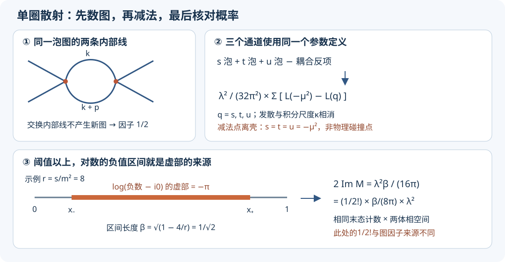

本页目录
基础衔接 17 · 从单圈图到散射截面：同一个模型里的重整化闭环
1. 一个发散的积分，怎样给出有限的实验预测？
假设两颗相同标量粒子碰撞，探测器统计出射方向。最低阶预测没有角依赖；加入量子涨落后，积分发散，还出现一个看似任意的尺度μ。如果只说“减去无穷大”，学习者无法判断最后到底预测了什么。
我们要完成一条可复算的链：确定粒子和耦合的定义 → 算全部单圈贡献 → 按同一约定减法 → 检查概率守恒 → 算截面 → 换定义点并匹配参数。
取四维Minkowski度规\((+---)\)、\(\hbar=c=1\)、正质量\(m>0\)及小的正耦合λ：
λ无量纲；m、动量和μ有能量量纲。m定义为传播子极点质量，极点残数取1；λ在下面的Euclidean减法点定义。真空泡由真空归一化消去，不参与连通散射。这里只做弱耦合的固定单圈训练，不声称φ⁴描述现实基本粒子或提供任意高能的完备理论。
采用\(S=1+iT\)，\(\langle f|iT|i\rangle=i(2\pi)^4\delta^4(P_f-P_i)\mathcal M\)。顶点\(-i\lambda\)，传播子\(i/(k^2-m^2+i0)\)，所以\(\mathcal M_{\rm tree}=-\lambda\)。把这个负号固定下来，后面的干涉符号才不会混乱。
2. 先数图，尤其不要丢掉两种不同的1/2
四点单圈有s、t、u三个泡图，对应外腿配对\((12|34)\)、\((13|24)\)、\((14|23)\)。每个图的对称因子为1/2：两个相同内部线可以交换。
也可从Wick收缩核对。对固定外腿配对，交换两顶点有2种，每个顶点接两条已标记外腿有\(4\times3=12\)种，余下两条内线配对有2种；除以Dyson的\(2!\)和两个\(4!\)：
二点单圈是tadpole：两条已标记外腿有\(4\times3\)种收缩，除以\(4!\)也得1/2。它与外动量无关。后面截面另有一个相同末态计数的1/2!；两者来源不同，不能只留一个。
3. 二点函数先固定质量和外腿
令\(d=4-\epsilon\)，环积分带\(\kappa^\epsilon\)；κ是维数正规化的积分尺度，μ则是耦合定义点，暂时分开记。写
本讲直接记录“二点1PI插入的图值”，避免混用文献里正负号不同的Σ：tadpole图为
质量反项的图值为\(-i\delta m^2\)，故取
常数插入完全抵消，传播子极点保留在\(m^2\)；因为这一圈没有外动量依赖，极点残数在此阶也没有修正。外腿自能图加反项经LSZ处理后不再额外加入本讲的\(O(\lambda^2)\)四点振幅。两圈后这些简化一般不成立。
4. 实际算一个泡图，再把三个通道相加
若通过泡图的总动量为p、\(p^2=s\)，其图值为
用\(1/(AB)=\int_0^1dx/[xA+(1-x)B]^2\)，再平移环动量，分母变为\([\ell^2-D(x)+i0]^2\)，其中\(D(x)=m^2-sx(1-x)\)。维数正规化允许这种平移。先在Euclidean外动量计算，再按\(i0\)解析延拓，得到
这一结果来自Wick旋转后的径向积分：\(\Gamma(2-d/2)(D-i0)^{d/2-2}/(4\pi)^{d/2}\)；展开\(\Gamma(\epsilon/2)=2/\epsilon-\gamma_E+O(\epsilon)\)即可追踪常数。于是定义
另外两个泡图把s替换为t、u。这个步骤是同一拉格朗日量的三个交叉通道，不是把别的模型的减法例子拼接进来。
5. 减法点必须说清楚：它不是物理散射角
选离壳对称Euclidean MOM条件：四个外动量全取流入、总和为0，各\(p_i^2=-3\mu^2/4\)，且\(s=t=u=-\mu^2\)。例如Euclidean空间里等长四向量指向正四面体顶点，便实现这些不变量。规定该点的四点1PI振幅为\(-\lambda(\mu)\)。
物理散射外腿满足\(p_i^2=m^2\)及\(s+t+u=4m^2\)，所以不可能同时有三个通道都等于\(-\mu^2\)。减法是定义参数用的离壳条件，不是声称探测器能到达该点。
四点反项给\(\mathcal M_{\rm ct}=-\delta\lambda\)。令
则发散与κ依赖都在差中消去：
这是混合的“极点质量＋离壳MOM耦合”方案，不是\(\overline{\rm MS}\)。两者的发散部分一致，有限部分和λ的数值定义不同。省去有限减法后仍沿用本式的λ，就改变了计算问题。

6. 虚部不是数值噪声：它核对了概率守恒
令\(r=s/m^2\)并去掉常数\(\log(m^2/\kappa^2)\)，定义\(F(r)=\int_0^1\log[1-rx(1-x)-i0]dx\)。网页用的解析式可由\(x=(1+y)/2\)后积分\(\log(a+by^2)\)得到：
小r直接用两项相减会丢精度；展开对数并逐项积分给稳定级数
当\(s>4m^2\)，参数区间\(x_-<x<x_+\)中对数参数为负，\(x_\pm=(1\pm\beta)/2\)。由\(\log(-a-i0)=\log a-i\pi\)，虚部正好等于\(-\pi(x_+-x_-)=-\pi\beta\)。振幅前另有减号，所以
同一结果可独立由\(S^\dagger S=1\)验证。展开\(S=1+iT\)得\(-i(T-T^\dagger)=T^\dagger T\)；插入完整两粒子态，在前向散射的\(O(\lambda^2)\)有
这里\(\int d\Phi_2=\beta/(8\pi)\)，末态相同所以另除2。物理区t、u不大于0，没有这个两粒子虚部；只有s通道贡献。对照两种计算，可发现一个漏掉的1/2或错误的\(i0\)符号，而不只是“数值看上去合理”。
先预测，再打开结果。r=4时\(F=-2\)、虚部为0；r=8时\(\beta=1/\sqrt2\)、\(\operatorname{Im}\mathcal M_s/\lambda^2=1/(32\sqrt2\pi)\)。阈值以下的r在这个实验里是虚拟通道变量，不是两个质量m入射粒子的可达能量。
7. 从振幅到截面：一致保留微扰阶数
质心系取\(z=\cos\theta\)，则
两体相空间微分为\(d\Phi_2/d\Omega=\beta/(32\pi^2)\)，入射不变量通量为\(2s\beta\)。因此，若对完整立体角积分，并把两颗相同出射粒子计为一个事件，
若只积分一个代表半球，可去掉相同粒子的1/2；两种约定的总事件率必须相同。不能全立体角积分又漏因子。严格阈值入射通量为0，上式在那里表示从\(s>4m^2\)趋近的极限。
因为树级是\(-\lambda\)，单圈是\(O(\lambda^2)\)，一致的下一阶截面为
直接平方\(-\lambda+\mathcal M_{\rm loop}\)会多出\(|\mathcal M_{\rm loop}|^2\)。它只是部分\(\lambda^4\)项，同阶还有树级与两圈的干涉，尚未计算。因此不能把那个平方称为完整的更高阶截面。虚部不进入本模型的λ³干涉，却已在上节的幺正性检验中不可缺少。
无脚本也可复算：取\(m=1,s=8,z=0,\mu=1,\lambda=1\)，则\(t=u=-2\)。依次求\(F(-1),F(8),F(-2)\)，代入\(\mathcal M_{\rm loop}=[3F(-1)-F(8)-2F(-2)]/(32\pi^2)\)，最后计算\([1-2\operatorname{Re}\mathcal M_{\rm loop}]/(1024\pi^2)\)。表格和曲线中的单位为\(m^2d\sigma/d\Omega\)，恢复物理单位后截面随\(m^{-2}\)缩放。
默认参数的核对值如下；无需运行脚本也能检查你的计算：
| 量 | 数值 |
|---|---|
| Re M_loop | 0.00205051170 |
| Im M_loop | 0.00703372122 |
| 树级 m² dσ/dΩ | 0.0000989464684 |
| NLO m² dσ/dΩ | 0.0000985406866 |
| 相对截面修正 | −0.00410102339（约−0.4101%） |
调z变号只交换t与u，所以角分布必须前后对称。只有树级时它是平的；单圈通道对数引入角依赖。小λ与本页有限能区使示例修正温和，但“小修正”不能证明所有未知高阶项都小；大对数、强耦合等情形需要额外分析。
8. 任意尺度的正确含义：换点必须同时换参数
令原尺度为\(\mu_1\)、耦合\(\lambda_1\)。要求两套定义描述同一振幅，到单圈阶得到
推导只需代回：\(-\lambda_2\)的变化抵消三份减法常数的变化；在单圈系数里用\(\lambda_2^2\)替代\(\lambda_1^2\)仅产生\(O(\lambda_1^3)\)差。因此是“到已计算阶次一致”，不是把有限截断公式宣称为精确尺度无关。
取\(\mu_1=1,\mu_2=2\)，让λ依次为0.2、0.1、0.05。固定λ换点的振幅差正比λ²；一致匹配后的数值剩余从λ³起，所以减半比值趋向8。后者只是所用截断公式的残余阶数，不能据此算出真实两圈系数。
再对匹配式取\(\log\mu\)导数，在固定极点质量m下得到这个质量依赖方案的一圈β函数：
当\(\mu\gg m\)，积分趋向1，恢复\(3\lambda^2/(16\pi^2)\)；当\(\mu\ll m\)，积分约为\(\mu^2/(6m^2)\)。不能把高能极限直接当成本方案所有尺度的公式。
9. 迁移题：检查你是否真正连接了各步
题一。 某程序取\(m=1,s=8,\lambda=1\)，报告树级总截面\(1/(64\pi)\)，同时泡图算出\(2\operatorname{Im}\mathcal M=1/(8\sqrt2\pi)\)。它对完整立体角计数。两处结果各有什么问题？
查看答案：独立追踪图因子与事件计数
树级\(d\sigma/d\Omega=1/(1024\pi^2)\)，总截面应为\(1/(256\pi)\)，报告大了4倍。两体相空间给\(2\operatorname{Im}\mathcal M=1/(16\sqrt2\pi)\)，报告大了2倍。仅凭最终数值不能唯一定位代码，但应分别检查\(s=8\)是否代对、通量与全立体角末态1/2，以及泡图内部1/2。修好振幅的图因子不能自动修好截面的事件计数。
题二。 同学把μ从m换成2m，保持λ数值不动，发现截面变化，认为重整化失败。另一人把单圈振幅完整平方，说已经包含两圈精度。分别给出修正步骤。若将所有能量包括m和μ同时放大3倍而λ不变，截面应如何缩放？
查看答案：参数匹配、阶数与单位
先用第8节把\(\lambda(m)\)匹配为\(\lambda(2m)\)，再比较同一s、t、u下的预测；一致匹配后振幅差是\(O(\lambda^3)\)，截面差是\(O(\lambda^4)\)，恰为尚未控制的阶次。单圈完整平方中的\(|\mathcal M_{\rm loop}|^2\)必须与树级—两圈干涉一起才能组成该阶预测；本讲只保留树级—单圈干涉。所有能量乘3保持s/m²、μ/m与z不变，振幅无量纲而\(d\sigma/d\Omega\)变为原来的1/9。这是很有效的单位检查。
10. 验算与下一步
程序的解析泡函数用70位Feynman参数积分作独立参照；阈值上方在两个根处分段，虚部另由负对数区间长度计算。阈值下方也在\(x=1/2\)分段，避免漏掉尖锐区域。还核对交叉对称、离壳减法条件、光学定理、尺度匹配剩余阶数及质量缩放。双精度输出不是严格舍入误差证书。
本讲完成的是有质量实φ⁴的单圈二点重整化与\(2\to2\)散射训练。规范场的Ward恒等式、红外实辐射抵消、两圈重叠发散、非微扰定义和真实实验拟合仍需后续课程，不能从这个有限模型推断已经完成所有场论计算。
速查与资料
树级\(-\lambda\)；三泡图各1/2；极点质量固定；对称Euclidean点定义λ；减法后取完整三个通道；虚部检验幺正性；NLO截面只留干涉；换μ同时匹配λ。
图的系数和发散项可交叉检查 FeynCalc官方φ⁴单圈重整化算例，该算例的MS方案需与本讲有限MOM减法区分。场论正规化与参数定义背景见 Pawlowski量子场论讲义第7章；幺正性关系参见 Cambridge相对论光学定理补充讲义。本页给出具体模型的推导与独立数值复算，资料核查：2026-09-09。